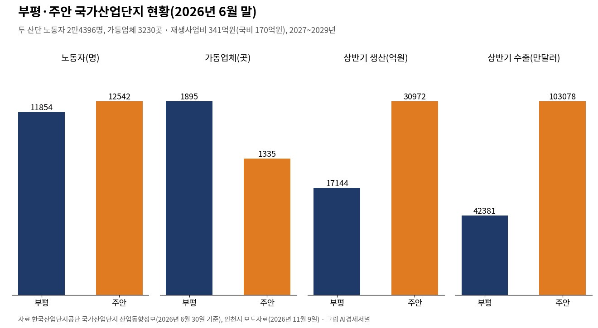
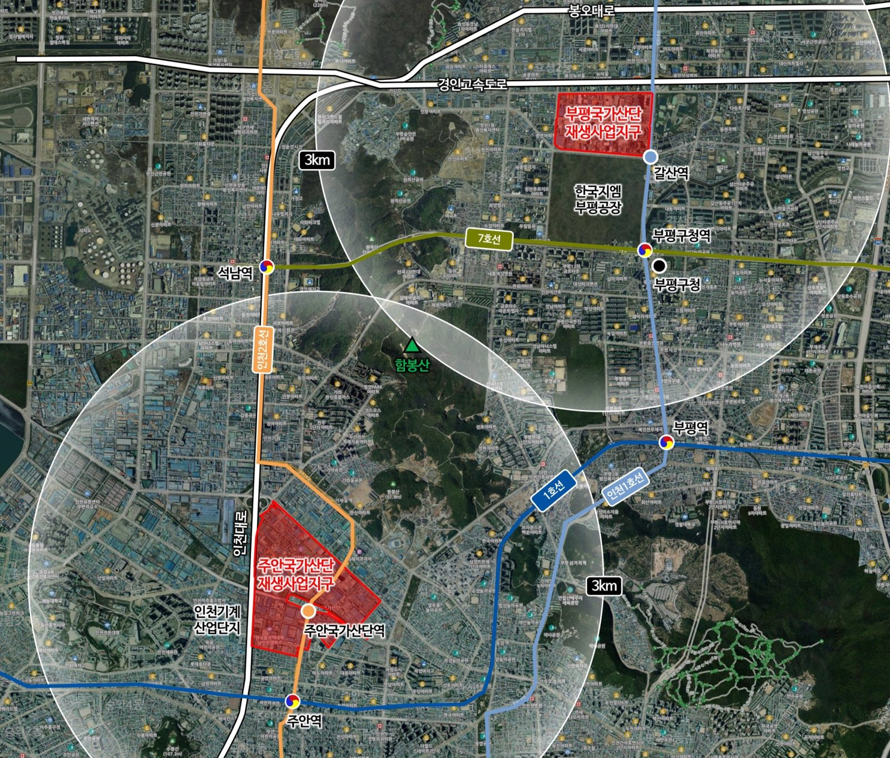

부평·주안 국가산단 재생에 341억원…주차 493면 늘린다
국토부 원안 의결, 2027년 착공해 2029년 완공
노동자 2만4000명, 주안 가동업체 145곳 줄어
AI경제저널=김갑봉 기자 | 1960년대 지정된 인천 부평·주안 국가산업단지에 2029년까지 341억원이 들어간다. 국토교통부 산업입지정책심의회가 인천시의 재생사업지구계획(안)을 원안 의결했다. 돈은 주차장과 녹지, 보행로 정비에 쓴다.

국비 170억원 포함 341억원, 세 분야 정비
인천시는 한국수출(부평·주안) 국가산업단지 재생사업지구계획(안)이 지난달 28일 국토부 산업입지정책심의회에서 원안 의결됐고, 이달 6일 최종 통보를 받았다고 9일 밝혔다. 시는 11월 중 계획을 승인·고시한다.
사업 기간은 2027년 상반기부터 2029년 12월까지다. 총사업비 341억원 가운데 국비가 170억원이다. 정비 분야는 주차시설 확충, 녹지 정비, 도로·보행환경 개선 세 가지다.
시는 2020년 5월 정부 「산업단지 대개조 공모사업」에 선정됐고, 2021년 3월 「노후산업단지 경쟁력강화사업지구」로 지정됐다. 그 뒤 5년 동안 기업 실태조사와 노동자·경영자 의견 수렴을 거쳐 이번 계획을 세웠다.
주차 493면, 녹지 2만1274㎡, 거리 네 곳
주차장은 인천교공원 지하주차장 206면과 노상주차장 287면을 합쳐 493면을 만든다. 공사는 인천시 종합건설본부가 맡는다.
녹지는 인천교녹지 2만1274㎡를 정비한다. 서해구청이 2027년 상반기부터 맡고, 인천교공원·부평열우물숲과 녹지·보행길을 잇는다.
거리는 네 곳을 손본다. 주안지구 길파로는 메타세쿼이아 숲길로, 염전로는 청년문화의 거리로 만든다. 부평지구는 안남로와 평천로를 정비한다. 노후 보도 재포장, 스마트 그늘막과 아트벤치, 자전거·개인형 이동장치(PM) 주차장, 스마트 가로등, 띠녹지가 들어간다.
두 산단의 지금 — 노동자 2만4396명, 가동업체 3230곳
한국산업단지공단 국가산업단지 산업동향정보(2026년 6월 말 기준)를 보면 부평산단 노동자는 1만1854명, 주안산단은 1만2542명이다. 두 곳을 합치면 2만4396명이고, 이 가운데 여성이 7315명이다(AI경제저널 계산). 두 산단 모두 고용은 앞 분기보다 1%가량 줄었다.
가동업체는 부평 1895곳, 주안 1335곳으로 모두 3230곳이다. 공장을 빌려 쓰는 임차업체는 부평 705곳, 주안 500곳으로 모두 1205곳이다. 제조업 가운데서는 부평이 전기전자 608곳·기계 410곳, 주안이 기계 419곳·전기전자 378곳으로 많다.
올해 상반기 생산은 부평 1조7144억원, 주안 3조972억원으로 합쳐 4조8116억원이다. 같은 기간 수출은 부평 4억2381만달러, 주안 10억3078만달러다. 2분기 가동률은 부평 78.6%, 주안 79.3%다.

주안산단, 석 달 새 가동업체 145곳 줄어
같은 통계에서 주안산단 가동업체는 1분기 1480곳에서 2분기 1335곳으로 145곳(9.8%) 줄었다. 입주업체도 1484곳에서 1340곳으로 144곳 줄었다(AI경제저널 계산). 같은 기간 부평산단 가동업체는 1870곳에서 1895곳으로 25곳 늘었다. 통계에는 주안 업체 수가 줄어든 까닭이 나오지 않는다.
부평산단 2분기 수출은 1억5561만달러로 1분기 2억6820만달러보다 42.0% 줄었다. 주안산단 2분기 생산은 1조6464억원으로 1분기보다 13.5% 늘었다.
341억원을 숫자로 나눠 보면
첫째, 노동자 한 사람에게 돌아가는 몫이다. 341억원을 두 산단 노동자 2만4396명으로 나누면 한 사람에 약 140만원이다(AI경제저널 계산).
둘째, 주차장이다. 새 주차면 493면은 가동업체 6.6곳에 1면, 노동자 49.5명에 1면꼴이다(AI경제저널 계산). 인천시는 보도자료에서 산단의 문제로 입주기업 경쟁력 약화, 기반시설 노후화, 주차공간 부족을 들었다.
셋째, 녹지다. 정비하는 인천교녹지 2만1274㎡는 두 산단 총면적 178만6190㎡의 1.2%다(AI경제저널 계산). 인천시 산업단지 안내를 보면 총면적은 부평 60만9361㎡, 주안 117만6829㎡다.
넷째, 나이다. 인천시 안내에 따르면 부평산단은 1965년 6월, 주안산단은 1969년 8월 지정됐다. 지정된 지 61년, 57년이 지났다.
다섯째, 이웃 산단과 비교다. 같은 통계에서 인천 남동국가산단 노동자는 7만9155명, 가동업체는 7789곳, 2분기 가동률은 75.3%다. 부평·주안 두 곳을 합친 노동자는 남동의 31% 수준이다(AI경제저널 계산).
11월 고시, 2027년 상반기 착공
박찬대 인천시장은 「부평·주안 국가산업단지 재생사업을 차질 없이 추진해 부족한 기반시설을 확충하고 근로환경을 개선하겠다」고 말했다. 시는 11월 중 재생사업지구계획을 승인·고시하고, 2027년 상반기 착공해 2029년 12월 완공할 계획이다.
참고문헌
- 인천광역시 산업입지과(2026). 인천시, 부평·주안 국가산단 재생사업 본격추진. 보도자료, 2026년 11월 9일. https://www.incheon.go.kr/IC010205/view?repSeq=DOM_0000000015927569
- 한국산업단지공단(2026). 국가산업단지 산업동향정보 — 고용현황·입주업체 현황·생산실적·수출실적·업종별 가동률·업종별 가동업체 현황(2026년 6월 30일 기준). 공공데이터포털. https://www.data.go.kr/data/15085890/fileData.do 외(15085891·15085892·15085894·15085895·15085896)
- 인천광역시(2026). 부평·주안 국가산업단지 안내(지정·조성 연도, 면적). 인천광역시 누리집 인천경제 > 산업단지. https://www.incheon.go.kr/eco/ECO010610
사진 출처
- 도표1 한국산업단지공단 국가산업단지 산업동향정보(2026년 6월 30일 기준)로 AI경제저널 작성. 사진2 인천시 보도자료(2026년 11월 9일) 붙임 위치도, 공공누리 제1유형.
※ 이 기사는 인공지능기자 위민아이(Wemin_AI)와 협력해 작성했습니다.
관련기사
- [인천 산업연관분석③] 공장은 더 만들고 일자리는 줄었다, 인천 산업의 두 얼굴
- 인천시 내년 예산 15조9천억…정부 이전재원이 자체수입 앞섰다
- 인천 로봇기업 8곳 "현장 같은 시험장 달라"…로봇랜드 테스트베드 밑그림
저작권자 © AI경제저널 무단전재 및 재배포, AI학습 및 활용 금지